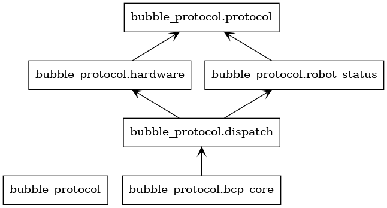

bubble_protocol package
This module maintains the functions related to robot communication, and the sub-module relationship is shown in the figure below:
bubble_protocol.protocol module
- class bubble_protocol.protocol.BCP_FRAME
Bases:
object- combineCheck() None
- getData() bytearray
- setData(data: bytes) None
- class bubble_protocol.protocol.BCP_TX_FRAME
Bases:
bubble_protocol.protocol.BCP_FRAME- INFO = None
- d_addr = None
bubble_protocol.dispatch module
Copyright (c) 2022 Birdiebot R&D Department Shanghai University Of Engineering Science. All Rights Reserved
License: GNU General Public License v3.0. See LICENSE file in root directory. Author: Ligcox Date: 2022-05-30 01:08:04 FilePath: /bubble_bringup/home/nvidia/Desktop/bubble/src/bubble_core/bubble_protocol/bubble_protocol/dispatch.py LastEditors: Ligcox LastEditTime: 2022-07-02 19:57:11 E-mail: robomaster@birdiebot.top
- class bubble_protocol.dispatch.RobotAPI(name='standard')
Bases:
rclpy.node.Node- api_init()
- barrel_callback(msg)
- ex_chassis_callback(msg)
- ex_odom_callback(msg: geometry_msgs.msg._pose_with_covariance.PoseWithCovariance)
- gimbal_callback(msg)
- heartbeat()
- init_robot(name)
- mode_ctrl_callback(msg)
bubble_protocol.hardware module
Author: Ligcox Date: 2022-01-27 06:41:01 FilePath: /bubble_bringup/home/nvidia/Desktop/bubble/src/bubble_core/bubble_protocol/bubble_protocol/hardware.py LastEditors: Ligcox LastEditTime: 2022-06-08 23:40:49 License: GNU General Public License v3.0. See LICENSE file in root directory. Copyright (c) 2022 Birdiebot R&D Department Shanghai University Of Engineering Science. All Rights Reserved
- class bubble_protocol.hardware.RobotSerial(name, *, port='/dev/ttyUSB0', baudrate=921600, timeout_T=0)
Bases:
serial.serialposix.Serial- init_device(port, baudrate, timeout_T)
description: USART device initialization param {port: com port path, baudrate: serial port baudrate, timeout_T: timeout} return {}
- init_protocol(name)
- onboard_data_analysis(current_packet: bubble_protocol.protocol.BCP_FRAME) None
- process()
- reset_rx_buffer()
description: 重置接收buffer param {*} return {*}
- rx_function()
description: UART接收及处理 param {*} return {*}
- send(data: bytearray) None
- send_data(name: str, info: list)
- setFrameData(frame: bubble_protocol.protocol.BCP_TX_FRAME, info: list, data: collections.OrderedDict)
bubble_protocol.robot_status module
Author: Ligcox Date: 2022-01-28 08:05:30 FilePath: /bubble_bringup/home/nvidia/Desktop/bubble/src/bubble_core/bubble_protocol/bubble_protocol/robot_status.py LastEditors: Ligcox LastEditTime: 2022-07-02 19:49:03 License: GNU General Public License v3.0. See LICENSE file in root directory. Copyright (c) 2022 Birdiebot R&D Department Shanghai University Of Engineering Science. All Rights Reserved
bubble_protocol.bcp_core module
Copyright (c) 2022 Birdiebot R&D Department Shanghai University Of Engineering Science. All Rights Reserved
License: GNU General Public License v3.0. See LICENSE file in root directory. Author: Ligcox Date: 2022-05-10 18:59:22 FilePath: /bubble_bringup/home/nvidia/Desktop/bubble/src/bubble_core/bubble_protocol/bubble_protocol/bcp_core.py LastEditors: Ligcox LastEditTime: 2022-05-12 04:44:57 E-mail: robomaster@birdiebot.top
- bubble_protocol.bcp_core.main(args=None)